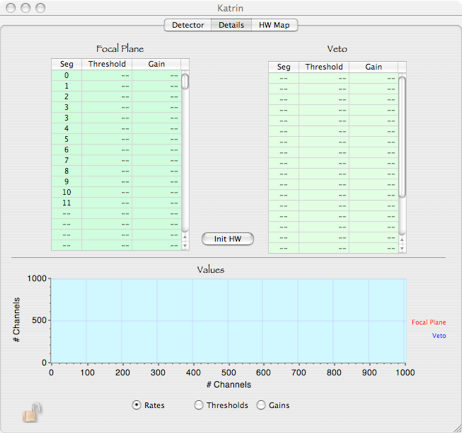
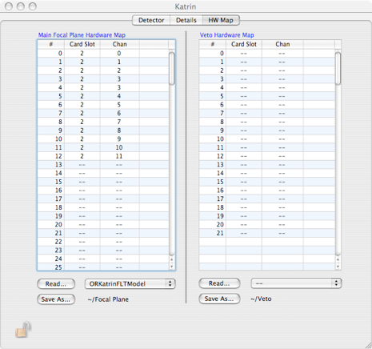
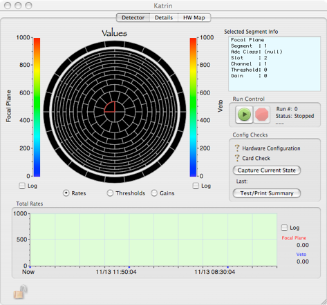
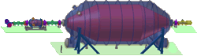
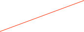

KATRIN Main Detector





This window will contain information specific to the KATRIN experiment.
Start and Stop runs from here
Here is the map that describes which channel is connected to which segment
List of Thresholds and gains. Note that you can edit the values here.
Info about the selected segment
Total rate over time
If any hardware specific parameter changes, the configuration check will fail at the start of a run and will post an alarm

Segment rates, Thresholds, or gains

Select what to display

Read/Save the connection map
histogram of rates, thresholds, or gains
Load all values to hardware